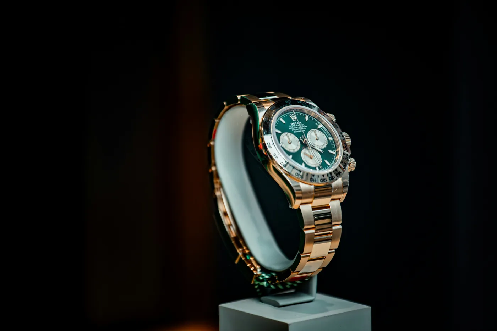

On paper, Brazil versus Norway is a mismatch of footballing history — five stars against a nation at only its second men's World Cup. On the wrist, it is one of the most evenly matched ties in the whole bracket. Both squads carry collectors of genuine seriousness, and the contrast between how they wear it — Norway's trophy-hunter against Brazil's quiet connoisseur — is the real rivalry. Here is the tie, told through the watches.
The Duel — Vinícius vs Haaland
Every knockout tie needs its headline act, and this one has two. Erling Haaland has assembled one of the deepest grail rotations in the modern game; Vinícius Júnior wears his taste more quietly, but no less expensively. One collects trophies; the other collects the references true enthusiasts chase. Start with the Norwegian, because his box is simply the loudest.
Erling Haaland

Haaland's collection reads like a wishlist most collectors will never complete: discontinued grails that only appreciate, serious complications, and trophy pieces that signal access money alone can't buy. Publicly photographed, it is valued well north of $2 million — and he tends to wear one piece for a while before rotating to the next.
Rolex
Cosmograph Daytona "John Mayer" — 116508
Solid 18ct yellow gold with the coveted green dial — the piece collectors call the holy grail of modern gold Daytonas. Haaland's signature Rolex.
Rolex
Cosmograph Daytona "Rainbow" — 116595RBOW
Everose gold set with a rainbow of baguette sapphires — the most valuable piece in his photographed collection, around half a million dollars.

Patek Philippe
Nautilus — 5711/1A
The discontinued steel Nautilus, the reference that defined a decade of demand. No longer made; only ever more sought-after.
Audemars Piguet
Royal Oak Concept "Black Panther" — 26620IO
AP's Marvel collaboration — a hand-painted Black Panther at the centre of a flying tourbillon, in titanium and black ceramic. Limited to 250 pieces worldwide.
Vinícius Júnior

Where Haaland collects loudly, Vinícius collects with restraint — a tighter rotation of blue-chip references worn without fanfare. His taste runs to the pieces serious collectors respect rather than the ones that trend, and the Royal Oak is the constant.
Audemars Piguet
Royal Oak Selfwinding — 15500ST
The modern 41mm Royal Oak in steel — Gérald Genta's 1972 design, still the most influential luxury sports watch ever made. His signature piece.
Rolex
Day-Date 40 — white gold, olive dial
The President in 18k white gold with the coveted olive-green dial — one of the most quietly flexed combinations in the entire Rolex catalogue.
Rolex
GMT-Master II "Root Beer" — Everose
The brown-and-black GMT in Everose gold — the traveller's watch reimagined as a warm-metal statement. His flash of colour.
Norway's Second Wrist — Ødegaard
If Haaland is Norway's noise, Martin Ødegaard is its poise. The Arsenal playmaker and national captain wears exactly the watch you'd expect from a footballer's footballer: one reference, chosen well, worn constantly. It is the anti-Haaland approach — and arguably the more collectible instinct.
Martin Ødegaard
Rolex
GMT-Master II — steel, black Cerachrom
The all-black GMT in Oystersteel — the first GMT to wear the scratch-proof Cerachrom bezel. Understated, discontinued, and quietly correct. One watch, worn like a captain.
The Colour — Neymar
No Brazil story is complete without its most famous name, even from the bench. Neymar's contribution to this tournament's watch narrative did not happen on the pitch — it happened on Fifth Avenue.
Editorial · Brazil
Neymar Jr
During a break from Brazil's World Cup camp in New Jersey, football's biggest name slipped into New York and walked out of Jacob & Co roughly $1 million lighter — a white-gold Astronomia Dragon & Tiger set with 286 diamonds, handed over by founder Jacob Arabo himself. A reminder that at the very top of the game, the watches stop being about horology and start being about spectacle.
No Watch Finder link on this one — the Astronomia isn't a piece our verified sources carry, and it isn't meant to be chased. Some watches you go and find; this one you just watch someone else buy. (Reported: O Globo via Goal, June 2026.)Where the Rivalry Is Won
Strip away the diamonds and the spectacle, and the honest takeaway is this: three of these four wrists are genuinely chaseable. The Rolexes, the Nautilus, the Royal Oaks — discontinued or not — trade every day through authorised dealers, grey-market specialists and auction houses. Neymar's Astronomia is the exception that proves the rule: a piece to admire, not to source.
So whichever way the tie falls on Sunday, the wrists don't lose. If one of these references is the watch you've been chasing, the rivalry is won the same way every search is — by finding the right one, from someone worth trusting.
Watch Finder
Find Rolex, Patek & AP sources worldwide
Authorised dealers · Grey market · Auction houses · Online platforms